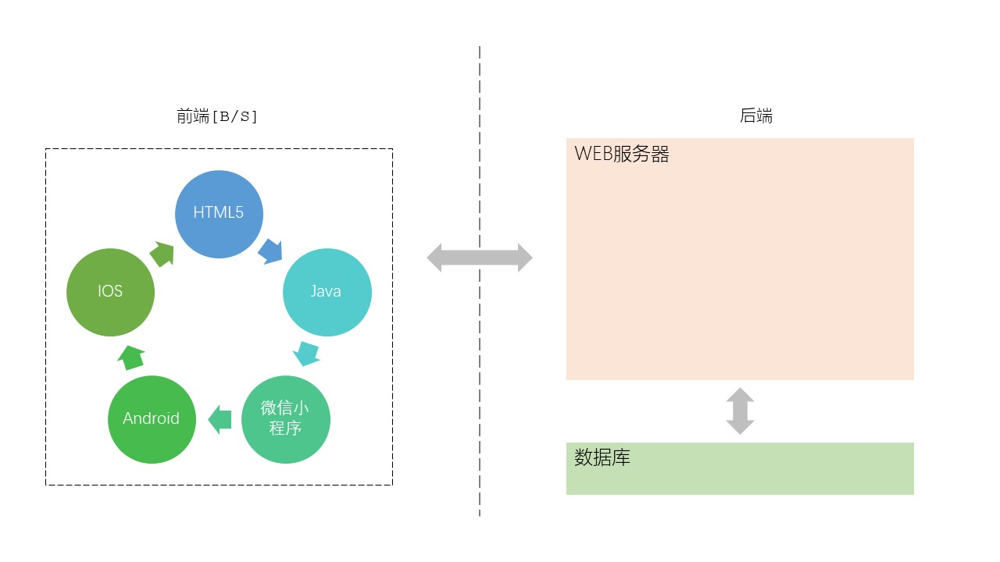

超文本传输协议
Http- 概述 Overview
- 超文本传输协议，万维网服务，World Wide Web
- WEB服务器，WEB server
- 采用 客户/服务 - C/S 提供网上信息浏览服务
- http 协议端口：80
- https 协议端口：443
- 客户 Client/C
运行客户程序，如浏览器
主动发起请求
- 服务器 Server/S
被动接收请求
向客户提供服务
不间断工作
同时处理多个请求（并发请求）
强大的硬件和高级的操作系统
- 服务器技术 Server
- 后端 Back-end
- IIS：Internet Information Services，因特网信息服务
- Apache
- tomcat，GitHub星级6.1k
- nginx，GitHub星级16.6k
- Node.js，GitHub星级88.2k
- 常见产品 Suits
- WAMP：Window + Apache + MySql + PHP
- LAMP：Linux + Apache + MySql + PHP
- AppSrer
- Laravel，GitHub星级69.9k
- PhpStorm
- 前端 Front-end
- HTML5 + CSS + JavaScript
- Java
- Python


超文本传输协议 HTTP
- HTTP 是面向事务的 (transaction-oriented) 应用层协议
- 使用 TCP 连接进行可靠的传送
- 定义了浏览器与万维网服务器通信的格式和规则
- 是万维网上能够可靠地交换文件（包括文本、声音、图像等各种多媒体文件）的重要基础
- HTTP 不仅传送完成超文本跳转所必需的信息，而且也传送任何可从互联网上得到的信息，如文本、超文本、声音和图像等
- HTTP 的报文结构
- 由于 HTTP 是面向正文的 (text-oriented)，因此报文中每一个字段的值都是一些 ASCII 码串，每个字段的长度都是不确定的
- 两类报文：
请求报文：从客户向服务器的请求
响应报文：从服务器到客户的回答
- 三个组成部分：
开始行：用于区分是请求报文还是响应报文
首部行：说明浏览器、服务器或报文主体的一些信息。可以有多行，也可以不使用
实体主体：请求报文中一般不用，响应报文中也可能没有该字段
万维网的文档 Page
- 在一个客户程序主窗口上显示出的万维网文档称为页面 page
- 页面制作的标准语言：HTML
- 分为：
静态万维网文档。内容不会改变。简单
动态万维网文档。文档的内容由应用程序动态创建
活动万维网文档。由浏览器端改变文档的内容
- 超文本标记语言 HTML
- Hypertext Markup Language
- 制作万维网页面的标准语言
- 它消除了不同计算机之间信息交流的障碍
- 是万维网的重要基础 [RFC 2854]
- HTML 定义了许多用于排版的命令：标记，也叫标签
- HTML 把各种标签嵌入到万维网的页面中，构成了所谓的 HTML 文档
- HTML 文档是一种可以用任何文本编辑器创建的 ASCII 码文件
- HTML 文档的后缀：.html 或 .htm
- CSS
- 层叠样式表 CSS (Cascading Style Sheets)
- 是一种样式表语言，用于为 HTML 文档定义布局
- CSS 与 HTML 的区别
HTML 用于结构化内容
CSS 则用于格式化结构化的内容；例如：精确规定在浏览器上显示的字体、颜色、边距、高度、宽度、背景图像等
其它 Other
- 可扩展标记语言 XML
- Extensible Markup Language
- 设计宗旨是：传输数据，而不是显示数据
- 特点和优点
可用来标记数据、定义数据类型
允许用户对自己的标记语言进行自定义，并且是无限制的
简单，与平台无关
将用户界面与结构化数据分隔开来
- 可扩展超文本标记语言 XHTML
- Extensible HTML
- 与 HTML 4.01 几乎相同，是更严格的 HTML 版本
- 作为一种 XML 应用被重新定义的 HTML，将逐渐取代 HTML
- Reading